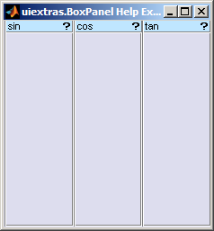

4.1:
Context help

When a uiextras.BoxPanel has its "HelpFcn"
filled in, a help button () is shown in the upper-right of the
title-bar. When the user clicks this button the specified function
is called.
For example:
Here we hookup the HelpFcn to simply bring up
the MATLAB documentation for each command. Clicking any of the "?" buttons
will cause the MATLAB help browser to open.f = figure( 'Name', 'uiextras.BoxPanel Help Example' );
b = uiextras.HBox( 'Parent', f );
uiextras.BoxPanel( 'Parent', b, 'Title', 'sin', 'HelpFcn', @(a,b) doc('sin') );
uiextras.BoxPanel( 'Parent', b, 'Title', 'cos', 'HelpFcn', @(a,b) doc('cos') );
uiextras.BoxPanel( 'Parent', b, 'Title', 'tan', 'HelpFcn', @(a,b) doc('tan') );

© 2010 The MathWorks Ltd• Terms of Use• Patents• Trademarks